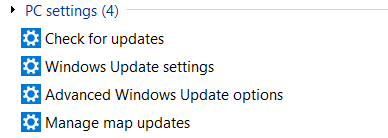

| Classic Shell http://www.classicshell.net/forum/ |
|
| Can't search pc settings http://www.classicshell.net/forum/viewtopic.php?f=12&t=8078 |
Page 1 of 1 |
| Author: | Brandhor [ Tue Nov 07, 2017 3:20 am ] |
| Post subject: | Can't search pc settings |
I have installed classic start menu on a new computer but it's not able to search pc settings items, for example if I search "update" on another computer I get this  but not on the new computer search pc settings is on by default but I also tried to disable and re-enable it |
|
| Author: | Ivo [ Fri Nov 24, 2017 12:41 pm ] |
| Post subject: | Re: Can't search pc settings |
Does the search from the Windows menu work? Classic Shell uses the indexing service to find the settings. The folder with the settings is %LOCALAPPDATA%\Packages\windows.immersivecontrolpanel_cw5n1h2txyewy\LocalState\Indexed\Settings\en-US See if it is enabled for indexing. |
|
| Author: | Brandhor [ Fri Nov 24, 2017 1:06 pm ] |
| Post subject: | Re: Can't search pc settings |
Ivo wrote: Does the search from the Windows menu work? Classic Shell uses the indexing service to find the settings. The folder with the settings is %LOCALAPPDATA%\Packages\windows.immersivecontrolpanel_cw5n1h2txyewy\LocalState\Indexed\Settings\en-US See if it is enabled for indexing. yeah the search for the windows menu works even if somehow the localstate folder is empty, I've copied the content from another computer and it's now working on classicshell as well, thanks |
|
| Page 1 of 1 | All times are UTC - 8 hours [ DST ] |
| Powered by phpBB® Forum Software © phpBB Group https://www.phpbb.com/ |
|